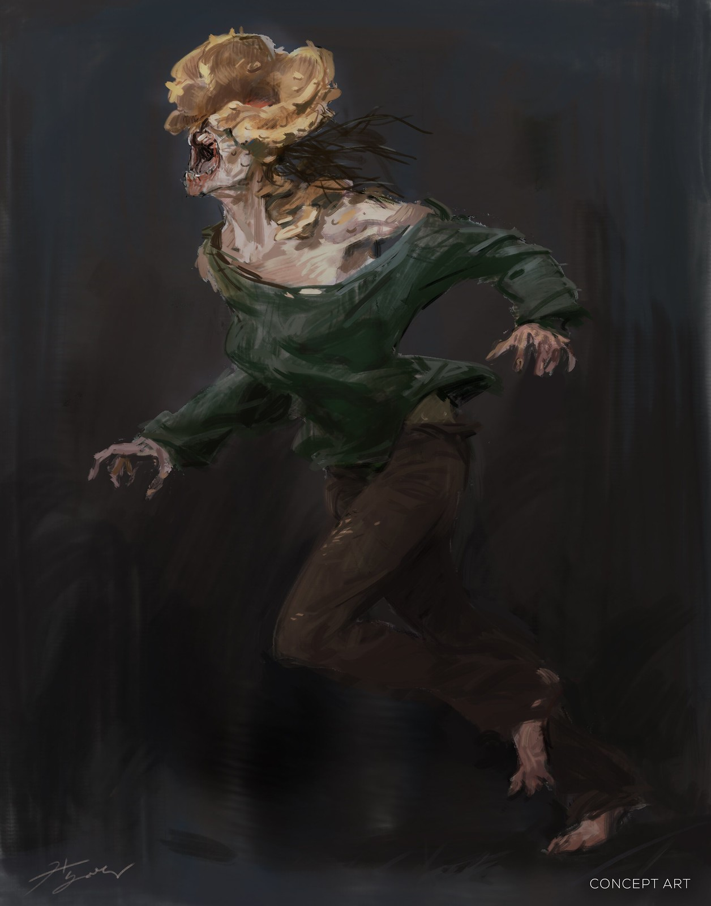

<!DOCTYPE html>
<html lang="fr">
    <head>
        <title>types d'infectés tlou</title>
        <meta charset="utf-8">
        <link rel="stylesheet" href="style.css" type="text/css"/>   
    </head>
    <body>
        <!-- zombies.png-->    
    </body>
</html>
<header>
    <h1>Les 4 types d'infectés dans The Last Of Us</h1>
    <nav>
        <ul>
            <li><a href="index.html">Accueil</a></li>
            
        </ul>
    </nav>
</header>

<section>
<h2>Les coureurs</h2>
<p>Premier stade de l'infection. <br /> Les coureurs, c'est donc le premier stade de l'infection, qui se produit dans les deux jours suivants la morsure. Comme leurs noms l'indiquent ils sont très rapides et attaquent en hordes.

<br />
<br />

<br /> 

</section>

<section>
<h2>Les rodeurs</h2>
<p>Les rodeurs désignent le deuxième stade de l'infection. Ce sont les plus répendu dans l'univers. Ils sont moins rapide que les coureur mais ils sont plus agressifs<br />

<br />
<br />

<br /> 

</section>

<section>
<h2>Les claqueurs</h2>
<p>Les claqueurs constitent la troisième étape de l'infection, qui intervient 1 an après la morsures. <br />
ils sont aveugles, le champignon ayant explosés leurs yeux, mais ils entendent très bien.
<br />
<br />

<br /> 

</section>


<section>
<h2>Les colosses</h2>
<p>On reconnait un colosses a son aspect : il est gros et gonflé de bulles produites pas le champignons.<br />
Les couches de champignons sur leurs corps les rendent difficiles a tuer. ils sont lent mais très puissant.
<br />
<br />

<br /> 

</section>

<footer>
    <p>Ce sont les 4 infectés les plus courant, mais il en existe pleins d'autres.</p>
	                                              Ema Hory et Lou-Ann Mullier
</footer>
